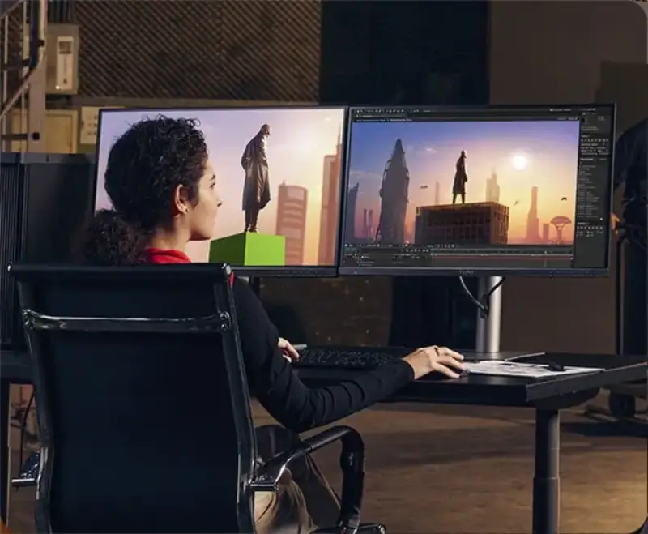
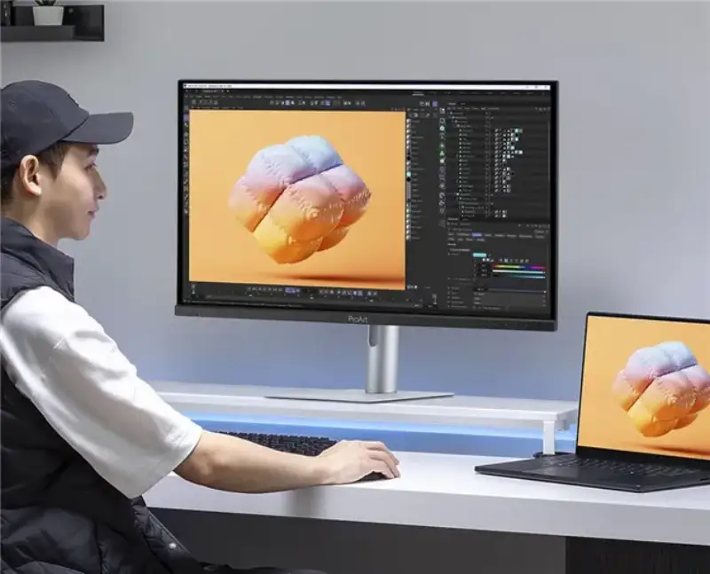

Photography, video editing, and visual design place many demands on a display. High resolution helps you check fine detail. Accurate color gives you a reference for adjustments, and easy connection supports your daily workflow. The ASUS ProArt DesignDream 27 OLED professional monitor combines a 4K QD-OLED panel, professional color, and USB-C connection. It offers a display choice for creators who want to upgrade their desk.

The DesignDream 27 OLED uses a 26.5-inch QD-OLED panel at 3840 by 2160 resolution. The 4K image shows fine texture and outline. Together with the deep black of OLED, it supports detail checks in photo post-processing, video editing, and visual content work. For night scenes, backlight, and material close-ups, you can see the light-dark relationship on screen to guide local edits and the overall style.
For color, the DesignDream 27 OLED covers 99% of the DCI-P3 color space at 10-bit depth. It is factory calibrated and Calman certified, with color accuracy of delta E below 1.5. The wide color space, smooth color grading, and factory calibration together give a solid display base for skin tones, gradient checks, and video color work. You can set it to the target color space and workflow of each project for daily creation.
Beyond static images, the DesignDream 27 OLED supports a 120 Hz refresh rate. This gives smoother interaction and dynamic display for moving content, and covers both fine static detail and motion.

For desk connection, the DesignDream 27 OLED has a USB-C port that carries video, data, and up to 96 W of power. When you connect a compatible laptop, one cable handles display output, data, and charging, which simplifies your desk wiring. It also offers HDMI 2.1, DisplayPort 1.4, and USB expansion ports for other devices.
For a two-PC setup, the built-in Auto KVM lets you control two connected computers with one keyboard and mouse. This suits creators who use both a laptop and a desktop.
From checking local texture in a photo, to adjusting the light and color of video, to daily device connection, the ProArt DesignDream 27 OLED fits display ability into real creative work. If you want 4K OLED image quality, professional color, and USB-C connection for your current work, this monitor balances on-screen quality with desk experience. Product details and buying information are available through ASUS official channels.